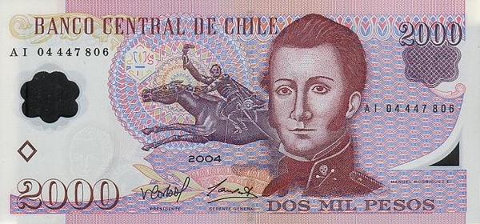
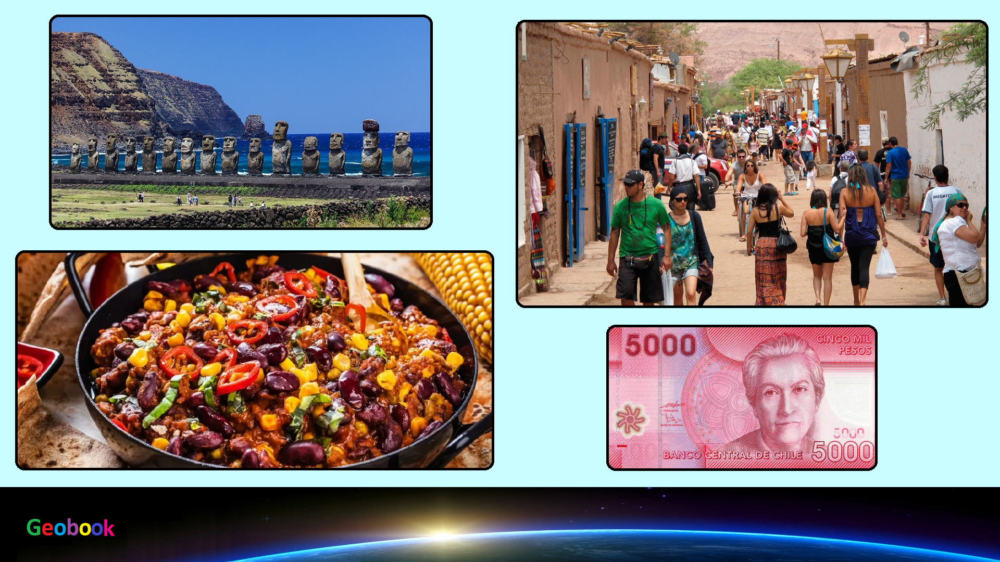

____
Валюта
Валюта в Чили - Чилийское песо.
Курс: 1 Чилийское песо - 0,10 рублей (7 февраля 2021).
Появилось Чилийское песо в 1975 году. Находятся банкноты номиналом 500, 1000, 2000, 5000, 10 000 и 20 000 песо, а также монеты достоинством 1, 5, 10, 50, 100 и 500 песо.

История
Старый песо
Чеканка серебряных песо начата в 1817 году в Сантьяго, это были первые монеты Америки с указанием номинала в песо. Денежная система использовалась та же, что и в других испанских владениях Америки: 1 эскудо = 2 песо = 16 реалов.
В 1851 году введена десятичная система: 1 песо = 10 децимов = 100 сентаво, но чеканка монет в 1/2 и 1 сентаво была начата уже в 1835 году.
В 1895 году было установлено золотое содержание в 0,549175 г чистого золота, что соответствовало курсу: 1 песо = 16 английских пенсов. В 1925 году золотое содержание снижено до 0,183057 г, что соответствовало курсу: 1 песо = 6 английским пенсам. В апреле 1932 года прекращён размен банкнот на золото.
В связи с инфляцией в 1955 году прекращено использование сентаво.
1 января 1960 года введена новая денежная единица — 1 эскудо (= 100 сентесимо), песо обменивались на эскудо 1000:1.
Несмотря на денежную реформу, до 1980 г. продолжали чеканиться инвестиционные золотые монеты с номиналами в «старых песо».
Новый песо
29 сентября 1975 года вместо эскудо вновь введено песо, эскудо обменивались на песо 1000:1.
В годы диктатуры на аверсе монет в 5 и 10 песо использовалось изображение крылатой женщины, разрывающей цепи, с подписью LIBERTAD (свобода) и датой военного переворота 11.9.1973 — фигура символизировала «освобождение от марксизма». После восстановления в Чили гражданской власти дизайн монет был изменён, на аверсе помещено изображение национального героя Бернардо О'Хиггинса, уже использовавшееся на монетах других номиналов. Позднее на монетах с крупным номиналом появились и другие изображения (например, женщина народа мапуче).
Монета 50 песо 2008 года выпуска
Опечатка «Chiie» на аверсе.
В 2008 году чилийским монетным двором была выпущена партия монет в 50 песо с опечаткой на аверсе: рядом с портретом Бернардо О’Хиггинса вместо «Chile» было написано «Chiie».
После обнаружения ошибки в феврале 2010 года Грегорио Иньигес (исп. Gregorio Íñiguez), глава чилийского монетного двора, был уволен. Однако монеты с дефектом из обращения изъяты не были; при этом на некоторых сайтах-аукционах появились предложения о продаже таких монет по цене от 350 до 20 000 песо.
Первоначальный эскиз монеты образца 1981 года был выполнен медальером Рене Тено (фр. René Thénot) (1893—1963).
____
